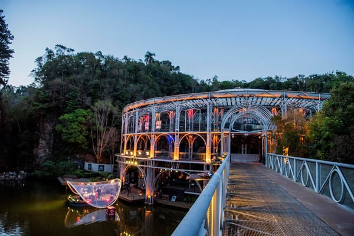

Inaugurada em 1992, a Ópera de Arame é uma das maiores atrações turísticas de Curitiba, capital do Estado do Paraná. O monumento, de autoria do arquiteto paranaense Domingues Bogestabs, está inserido no Parque das Pedreiras, uma área natural com muitos lagos e vegetação nativa. O edifício transparente, que possui capacidade para 1.572 espectadores, está entre os pontos turísticos mais visitados da cidade e acolhe uma série de espetáculos. Com uma estrutura inovadora - a construção é feita com tubos de aço e vidro - o projeto almeja integrar a obra à paisagem, trazendo o lado de fora para dentro da sala.
Características principais:
Arquitetura singular: O projeto arquitetônico foi criado por Domingos Bongestabs e é reconhecido pela integração harmoniosa com o ambiente natural. A estrutura circular permite que os visitantes tenham uma visão de 360º do entorno, tornando o local ideal tanto para espetáculos quanto para contemplação.
Capacidade: A Ópera de Arame pode acomodar cerca de 2.400 espectadores e é palco de uma grande diversidade de eventos, incluindo concertos, peças de teatro e espetáculos de dança.
Lago e passarela: Para chegar à ópera, os visitantes atravessam uma passarela sobre o lago, proporcionando uma experiência encantadora que prepara o público para a beleza do local. O espelho d'água ao redor reflete a estrutura metálica, criando uma paisagem cênica e poética.
Pedreira Paulo Leminski: Ao lado da Ópera de Arame está a Pedreira Paulo Leminski, um grande espaço a céu aberto que também recebe eventos de grande porte. Com capacidade para 20 mil pessoas, a Pedreira complementa o complexo, sendo um importante ponto cultural de Curitiba.
Localização / Funcionamento / Valores
Rua João Gava, 920, Abranches, Curitiba - PR, 82130-010
Horário de funcionamento: Das 10h às 18h, de terça a domingo.
Preços das entradas (bilheteria física) R$ 15,00 (inteira) e R$ 7,50 (meia)